Los modelos de lenguaje de gran escala (LLM) ya no se evalúan solo con benchmarks estáticos de respuesta única: la calidad conversacional que percibe una persona se mide cada vez más con preferencias humanas. Chatbot Arena, la plataforma de LMSYS descrita por Chiang et al. (2024), recoge esas preferencias mediante comparaciones pareadas: un usuario escribe un mensaje, dos modelos anónimos responden en paralelo y el usuario elige la respuesta que prefiere o declara un empate. Con millones de votos se ajusta un ranking de tipo Bradley–Terry (Bradley & Terry, 1952).
Las comparaciones pareadas son también la base del aprendizaje por refuerzo con retroalimentación humana (RLHF): a partir de pares de respuestas etiquetadas se entrena un modelo de recompensa que luego guía el ajuste del LLM (Christiano et al., 2017; Ouyang et al., 2022). Predecir el voto humano a partir del texto es, por lo tanto, el primer paso para construir un modelo de recompensa.
El problema es una clasificación multiclase probabilística de procesamiento del lenguaje natural, planteada en la competencia de Kaggle LMSYS – Chatbot Arena Human Preference Predictions, cuya métrica oficial es la pérdida logarítmica multiclase (log loss). Su dificultad proviene de tres fuentes: el voto humano es ruidoso y subjetivo; las personas tienen sesgos sistemáticos —prefieren respuestas más largas y con más formato— (Zheng et al., 2023), y la clase “empate” es casi tan frecuente como las otras dos.
Este informe reúne todo el proyecto. La sección 2 plantea los objetivos; la sección 3 presenta el marco teórico y la revisión bibliográfica que guió la selección de algoritmos; la sección 4 describe la metodología; la sección 5 presenta el conjunto de datos, la limpieza, el análisis exploratorio, el ajuste de los modelos, su comparación y la aplicación interactiva construida para probarlos; la sección 6 resume las conclusiones con respecto a cada objetivo.
Construir y evaluar modelos de aprendizaje automático que predigan la preferencia humana (A, B o empate) en batallas de Chatbot Arena a partir del texto de la conversación, y ponerlos a disposición de un usuario mediante una aplicación interactiva.
El procesamiento del lenguaje natural (PLN) es el área de la inteligencia artificial que estudia cómo representar, analizar y generar lenguaje humano con computadoras (Jurafsky & Martin, 2024). Sus tareas van desde la clasificación de documentos y el análisis de sentimiento hasta la traducción y la generación de texto. El problema de este proyecto es una tarea de clasificación de pares de textos: la entrada es una tripleta (prompt, respuesta A, respuesta B) y la salida es una distribución de probabilidad sobre tres clases. Como los algoritmos de aprendizaje automático operan sobre vectores numéricos, el núcleo de cualquier solución es la forma de representar el texto.
El modelo de Bradley–Terry (Bradley & Terry, 1952) asigna a cada competidor una “fuerza” y modela la probabilidad de que i venza a j como una función logística de la diferencia de fuerzas. Es la base del ranking de Chatbot Arena y de los modelos de recompensa de RLHF, donde la “fuerza” es un puntaje que una red neuronal asigna a cada respuesta (Ouyang et al., 2022). Su idea central —comparar A contra B mediante diferencias— inspiró las variables comparativas de este proyecto.
Modelo lineal que estima la probabilidad de cada clase mediante la función softmax de combinaciones lineales de los rasgos. Con regularización L2 es un estándar robusto para clasificación de texto con representaciones dispersas de alta dimensión como TF-IDF, es interpretable (sus coeficientes indican la dirección del efecto de cada variable) y se entrena rápido (Hastie et al., 2009).
Ensamble aditivo de árboles de decisión poco profundos, cada uno ajustado al gradiente de la función
de pérdida de los anteriores (Friedman, 2001). Captura relaciones no lineales e interacciones entre
variables sin necesidad de escalamiento. Las implementaciones basadas en histogramas, como LightGBM
(Ke et al., 2017) y XGBoost (Chen & Guestrin, 2016), discretizan los rasgos para entrenar órdenes de
magnitud más rápido; scikit-learn ofrece HistGradientBoostingClassifier, inspirado en
LightGBM (Pedregosa et al., 2011).
La arquitectura transformer (Vaswani et al., 2017) y los modelos preentrenados como BERT (Devlin et al., 2019) y DeBERTa (He et al., 2021) producen representaciones contextuales del texto que, ajustadas sobre la tarea, superan a los métodos léxicos en casi todas las tareas de PLN. Los modelos de recompensa modernos son LLM ajustados con una cabeza de clasificación (Ouyang et al., 2022), y el ajuste eficiente con adaptadores de bajo rango (LoRA) hace posible entrenarlos con menos memoria (Hu et al., 2022).
Un clasificador puede ordenar bien las clases y aun así dar probabilidades sobreconfiadas. La calibración de Platt ajusta una función sigmoide sobre los puntajes del modelo en datos no usados para entrenarlo (Platt, 1999); Niculescu-Mizil y Caruana (2005) mostraron que corrige sistemáticamente las distorsiones de varios algoritmos. Es especialmente relevante cuando la métrica es log loss.
| Trabajo | Enfoque | Aporte a este proyecto |
|---|---|---|
| Chiang et al. (2024) | Plataforma Chatbot Arena; ranking Bradley–Terry a partir de votos pareados. | Origen de los datos y formulación de A/B/empate. |
| Zheng et al. (2023) | LLM como juez; documentan sesgos de posición, verbosidad y autopreferencia. | Motiva las variables de longitud y formato y el análisis por sesgos. |
| Wang et al. (2024) | Muestran que los LLM jueces cambian su veredicto al intercambiar el orden de A y B. | Justifica usar variables simétricas (diferencias) y vigilar la posición. |
| Ouyang et al. (2022); Christiano et al. (2017) | Modelos de recompensa entrenados con comparaciones humanas para RLHF. | Marco del problema: predecir preferencias es aprender una recompensa. |
| Salton & Buckley (1988) | Esquemas de ponderación de términos (TF-IDF). | Representación del contenido textual en el modelo 2. |
| Friedman (2001); Ke et al. (2017) | Gradient boosting y su versión eficiente por histogramas. | Modelo no lineal sobre variables estructurales (modelo 3). |
| Platt (1999); Niculescu-Mizil & Caruana (2005) | Calibración de probabilidades. | Calibración sigmoide del modelo TF-IDF. |
| Devlin et al. (2019); He et al. (2021); Hu et al. (2022) | Transformers preentrenados y ajuste eficiente. | Enfoque de mayor rendimiento, propuesto como trabajo futuro. |
La literatura coincide en dos puntos que orientaron el proyecto. Primero, el voto humano está fuertemente influido por rasgos de superficie como la longitud y el formato (Zheng et al., 2023), de modo que esas variables por sí solas deberían superar al azar. Segundo, los mejores modelos de preferencia representan el contenido con transformers ajustados (Ouyang et al., 2022); en la propia competencia de Kaggle las soluciones de mejor posición se basaron en el ajuste fino de LLM abiertos con adaptadores LoRA. Como esos modelos requieren GPU y días de entrenamiento, el proyecto optó por una progresión de modelos clásicos, de lo más simple a lo más rico, que puede ejecutarse en una computadora personal (sección 4.3).
notebooks/ChatbotArena.ipynb): descripción del conjunto,
limpieza, derivación de variables y cuantificación de sesgos (sección 5.3).notebooks/Modelado_ChatbotArena.ipynb), incluyendo variables comparativas A–B.joblib) y construcción de la
aplicación en Streamlit (sección 5.6).El archivo de prueba de la competencia no incluye etiquetas, así que el conjunto de prueba se tomó
del propio train.csv. Tras la limpieza (57,470 batallas) se hizo una partición
estratificada 80/20 sobre la variable objetivo con semilla fija (random_state = 42):
45,976 batallas de entrenamiento y 11,494 de prueba, con la misma proporción de A (34.9%),
B (34.2%) y empate (30.9%) en ambos conjuntos. La estratificación garantiza que las métricas de prueba
no se distorsionen por un desbalance accidental. El conjunto de prueba no se usó en ninguna decisión de
modelado: el ajuste de hiperparámetros y la calibración usaron validación cruzada estratificada de 3
pliegues dentro del entrenamiento. La aplicación reproduce la misma partición y comprueba que sus
predicciones coinciden con las del cuaderno (diferencia máxima 2.2 × 10−16).
| Modelo | Entrada | Por qué se eligió |
|---|---|---|
| Línea base (a priori) | Ninguna: predice la distribución de clases del entrenamiento. | Referencia mínima; cualquier modelo útil debe tener menor log loss. |
| Regresión logística estructural | 18 variables de longitud, formato y turnos, estandarizadas. | Mide cuánto explican por sí solos los sesgos de superficie del EDA; interpretable y casi instantánea. |
| Regresión logística TF-IDF + estructura | TF-IDF de 1–2 gramas de A y de B (20,000 rasgos cada uno) + las 18 variables. | Incorpora el contenido del texto, como recomienda la literatura, con un modelo lineal adecuado para rasgos dispersos; se calibra para optimizar log loss. |
| HistGradientBoosting (con y sin ajuste) | Las 18 variables estructurales. | Captura interacciones no lineales (p. ej., longitudes similares y poco formato → empate) que un modelo lineal no ve. |
Las variables se construyeron de forma comparativa (diferencias y razones entre A y B), siguiendo la lógica de Bradley–Terry y la evidencia de Wang et al. (2024) sobre la sensibilidad a la posición. Se descartaron los transformers ajustados por su costo (GPU y horas de entrenamiento por época con ~46 mil tripletas largas) y la identidad del modelo, que no está disponible en el escenario de predicción.
Todo el entrenamiento se hizo en CPU en computadoras portátiles personales de los integrantes
(macOS y Windows 11), sin GPU: los algoritmos elegidos no la requieren. El modelo más costoso (TF-IDF
con calibración de 3 pliegues) tardó 83.5 s; la búsqueda en rejilla de HistGB (36 ajustes) se
paralelizó en todos los núcleos con n_jobs = -1.
| Herramienta | Uso |
|---|---|
| Python 3 | Lenguaje de todo el proyecto. |
| pandas, NumPy | Carga, limpieza y transformación de datos. |
| scikit-learn 1.9 | TF-IDF, regresión logística, HistGradientBoosting, GridSearchCV, calibración y métricas (Pedregosa et al., 2011). |
| matplotlib, seaborn | Visualizaciones estáticas del informe. |
| joblib, pyarrow | Serialización de modelos y de los datos procesados (Parquet). |
| Streamlit, Plotly | Aplicación web y gráficas interactivas. |
| Jupyter, Nix, Git/GitHub | Cuadernos, entorno reproducible y control de versiones. |
El conjunto proviene de la competencia de Kaggle LMSYS – Chatbot Arena Human Preference
Predictions (archivo train.csv): 57,477 batallas y 9 columnas. Cada fila contiene
un identificador, el nombre de los dos modelos (64 modelos distintos), el prompt y las dos respuestas
—almacenados como listas JSON con un elemento por turno— y tres indicadores binarios del voto
(winner_model_a, winner_model_b, winner_tie). No hay variables
numéricas nativas: toda la información predictiva está en el texto.
id), quedando 57,470 batallas.winner ∈ {A, B, tie}.n_turns, prompt_len,
prompt_words; por respuesta, longitud, palabras y elementos de formato (bloques de
código, viñetas, encabezados, negritas → fmt_a, fmt_b); y variables
comparativas: len_diff, len_ratio = log((len A+1)/(len B+1)),
words_diff, fmt_diff, code_diff, lists_diff,
headers_diff, bold_diff y a_is_longer.len_ratio para amortiguar la asimetría.En la aplicación, este mismo preprocesamiento se aplica automáticamente a cualquier batalla nueva
(módulo app/preprocesamiento.py), de modo que pasa inadvertido para el usuario.
La variable objetivo está casi balanceada: A gana el 34.9% de las batallas, B el 34.2% y el empate ocurre en el 30.9%. El 86.9% de las conversaciones tiene un solo turno (Figura 1). Las longitudes tienen una cola larga a la derecha: la mediana de una respuesta es de ~1,040 caracteres, pero hay respuestas de más de 50,000.
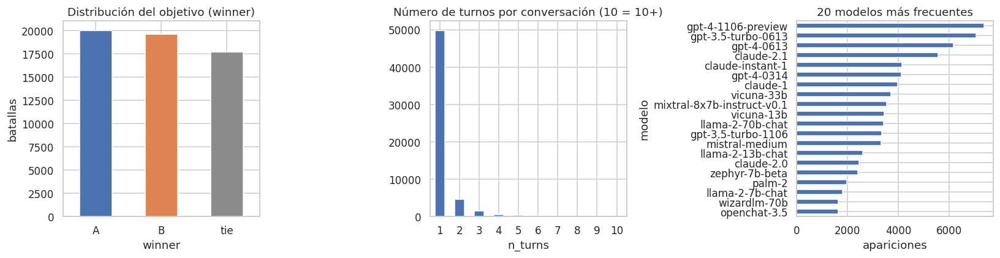
El hallazgo central del EDA es que la respuesta más larga suele ganar. Excluyendo empates,
gana en el 61.5% de las batallas, y esa probabilidad crece con la diferencia: de 49.5% cuando las
longitudes son casi iguales a 68.7% cuando una respuesta es cinco veces más larga (Figuras 2 y 3). La
correlación de Spearman entre len_diff y el objetivo (0.241) es la más alta de todas las
variables.
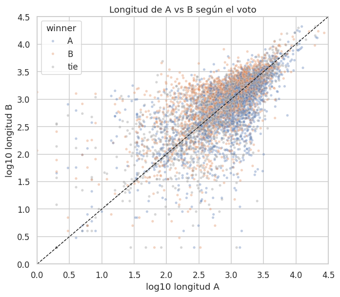
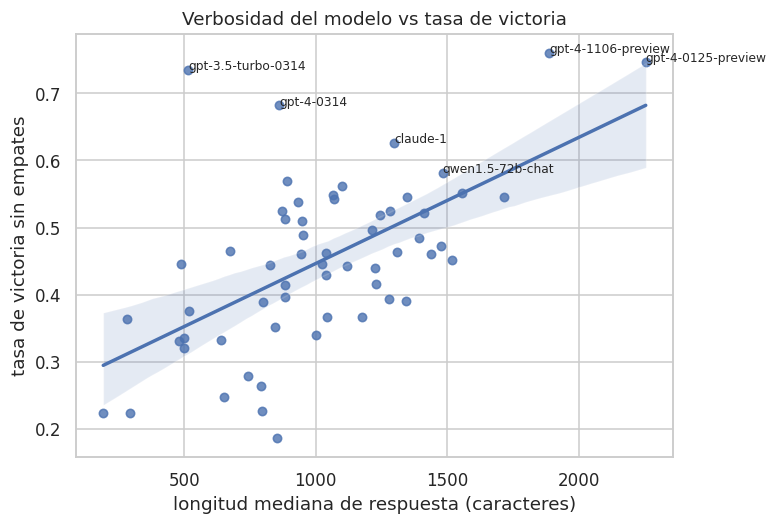
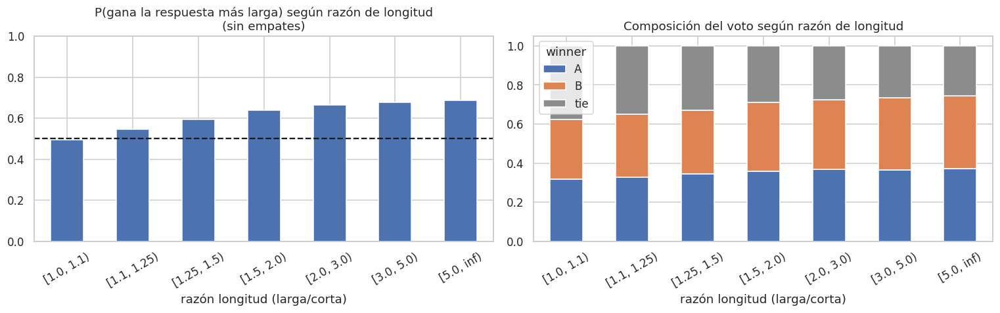
La respuesta con más formato markdown gana 45–46% de las veces frente a 26–27% de la otra, aunque el efecto está ligado a la longitud. Los empates son más frecuentes cuando las respuestas tienen longitud similar y disminuyen en conversaciones largas (Figura 5). El sesgo de posición existe pero es leve: A gana el 50.5% de las batallas decididas (prueba binomial, p = 0.038).
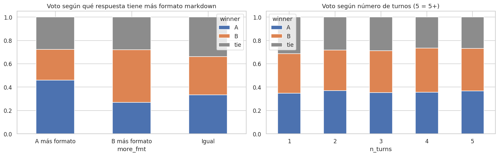
La tasa de victoria varía de 18.6% (chatglm2-6b) a 76.0% (gpt-4-1106-preview), pero la identidad no está disponible al predecir. Las correlaciones de las variables de superficie con el resultado son débiles (|ρ| ≤ 0.24; Figura 6), lo que anticipaba que un modelo basado solo en ellas superaría al azar por un margen modesto.
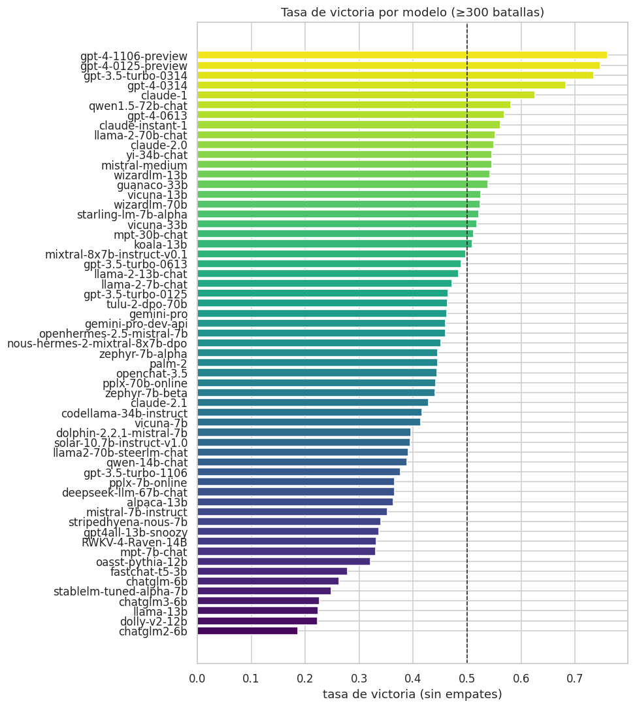
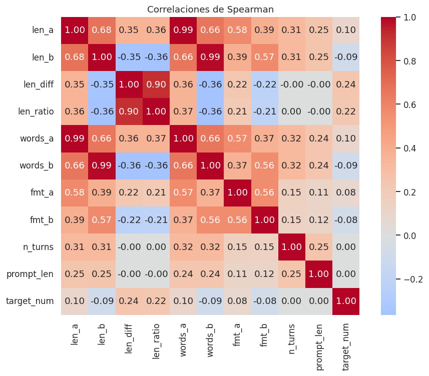
| Modelo | Búsqueda / decisión | Valor final |
|---|---|---|
| LogReg estructural | Regularización L2 por defecto; las variables se estandarizan para que el castigo sea comparable. | C = 1.0, max_iter = 2000 |
| LogReg TF-IDF + estructura | Con C = 1 y sin calibrar el modelo quedaba sobreconfiado: buena exactitud, pero log loss peor que la línea base. Se fortaleció la regularización y se añadió calibración sigmoide (Platt) con validación cruzada de 3 pliegues. | C = 0.3; 1–2 gramas, min_df = 5, 20,000 rasgos por lado; calibración sigmoide, cv = 3 |
| HistGradientBoosting | Configuración inicial manual; luego GridSearchCV sobre 12 combinaciones (learning_rate ∈ {0.05, 0.08, 0.15}, max_iter ∈ {300, 500}, l2 ∈ {0, 1}) con 3 pliegues estratificados, optimizando neg_log_loss. | learning_rate = 0.05, max_iter = 300, l2_regularization = 1.0 (log loss CV 1.0513); la parada temprana detuvo el modelo en 43 iteraciones |
El ajuste de HistGB mejoró la log loss de prueba de 1.0470 a 1.0460, una ganancia pequeña que indica que el modelo por defecto ya estaba cerca de su techo con estas variables; la tasa de aprendizaje baja con parada temprana redujo el sobreajuste. En el modelo TF-IDF la decisión de mayor impacto fue la calibración, que convirtió un modelo con probabilidades extremas en el mejor de todos por log loss. La curva de calibración de la Figura 7 muestra que, tras ella, las probabilidades predichas siguen de cerca la diagonal.
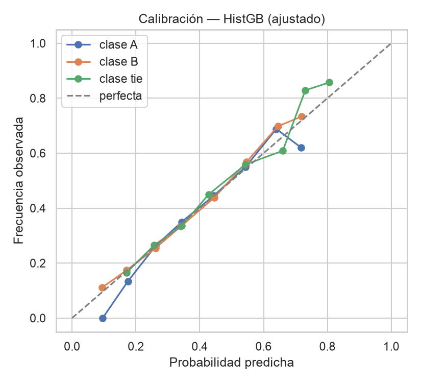
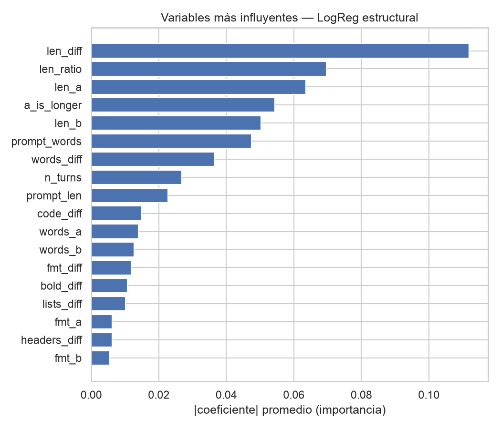
| Modelo | Log loss | Exactitud | F1 macro | Recall empate | Entrenamiento |
|---|---|---|---|---|---|
| LogReg TF-IDF + estructura | 1.0414 | 47.3% | 0.455 | 0.25 | 83.5 s |
| HistGB (ajustado) | 1.0460 | 45.7% | 0.451 | 0.34 | 6.2 s |
| HistGradientBoosting (sin ajustar) | 1.0470 | 45.6% | 0.450 | — | 0.6 s |
| LogReg estructural | 1.0654 | 43.4% | 0.365 | 0.05 | 0.1 s |
| Línea base (a priori) | 1.0972 | 34.9% | 0.173 | 0.00 | 0.0 s |
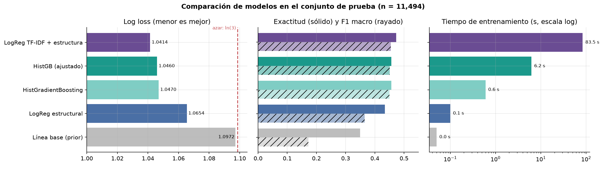
Los cuatro modelos superan a la línea base. El mejor es la regresión logística con TF-IDF: reduce la log loss de 1.0972 a 1.0414 (−5.1%) y eleva la exactitud de 34.9% a 47.3%. La diferencia con HistGB ajustado es pequeña (0.0046), lo que indica que la mayor parte de la señal aprovechable está en las variables estructurales y que una bolsa de palabras añade poco contenido semántico. La regresión logística estructural queda claramente atrás en F1 macro (0.365) porque casi nunca predice empates.
Las matrices de confusión (Figura 10) muestran el mismo patrón en todos los modelos: A y B se reconocen en 50–61% de los casos, pero el empate se confunde con una victoria. La exhaustividad del empate es 0.05 en la LogReg estructural, 0.25 en la TF-IDF y 0.34 en HistGB (Figura 11): el modelo de árboles es el que mejor detecta empates porque modela combinaciones como “longitudes parecidas y poco formato”. Esto es coherente con el EDA: ninguna variable aislada distingue al empate.
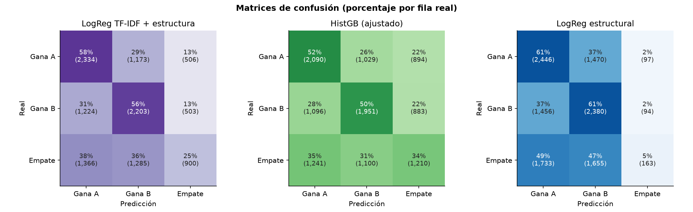
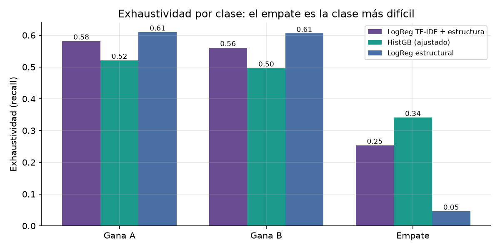
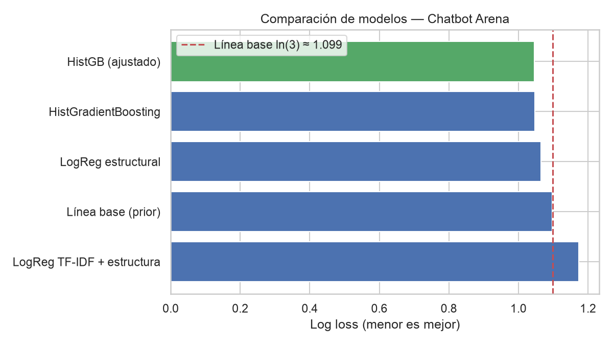
La Figura 13 divide el conjunto de prueba según la longitud relativa de las respuestas. Todos los
modelos aciertan más cuando una respuesta es mucho más larga (TF-IDF: 54% de exactitud, log loss 0.99)
y menos cuando son similares (42%, log loss 1.075). Es decir, los modelos aprendieron el mismo sesgo
que tienen los votantes: la longitud es su señal principal, como confirman los coeficientes de la
Figura 8, donde len_diff, len_ratio, len_a y
a_is_longer son las variables de mayor peso.
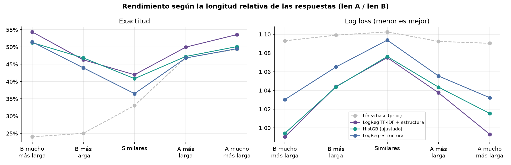
El costo crece casi dos órdenes de magnitud del modelo más simple al más complejo: 0.1 s para la LogReg estructural, 6.2 s para HistGB ajustado (más la búsqueda en rejilla) y 83.5 s para el TF-IDF calibrado, cuyo archivo además pesa 7.5 MB frente a 0.5 MB de HistGB. En predicción los tres responden en milisegundos para una batalla.
Se eligió la regresión logística TF-IDF + estructura como modelo principal por tener la menor log loss (la métrica de la competencia) y probabilidades bien calibradas. HistGB ajustado queda como alternativa recomendada cuando importa el costo o la detección de empates: es 13 veces más rápido de entrenar y solo 0.0046 peor en log loss. La aplicación ofrece los tres modelos y su consenso (promedio de probabilidades) para que el usuario los compare.
Se construyó una aplicación web con Streamlit y Plotly (carpeta app/ del
repositorio; se ejecuta con streamlit run app.py). Se eligieron estas tecnologías porque
permiten reutilizar directamente en Python el preprocesamiento y los modelos de scikit-learn
serializados, sin reimplementar nada en otro lenguaje; Streamlit resuelve la interfaz y el estado con
poco código, y Plotly ofrece gráficas interactivas (zoom, filtros por leyenda, información al pasar el
cursor). Los datos procesados se guardan en formato Parquet para cargarse en menos de un segundo.
La aplicación tiene una barra lateral para elegir uno, varios o todos los modelos y un interruptor para mostrar u ocultar el rendimiento, y cuatro pestañas:
Diseño y color. Se aplicó un esquema complementario para los rivales: azul para A y naranja para B, opuestos en el círculo cromático y distinguibles con las formas más comunes de daltonismo; el empate usa un gris neutro que no compite con ninguno. Los modelos usan una gama análoga de tonos fríos (violeta, verde azulado, azul pizarra) para no confundirse con A y B, y la línea base un gris claro. El fondo es blanco con un tono azul grisáceo para la barra lateral, lo que mantiene el contraste del texto.
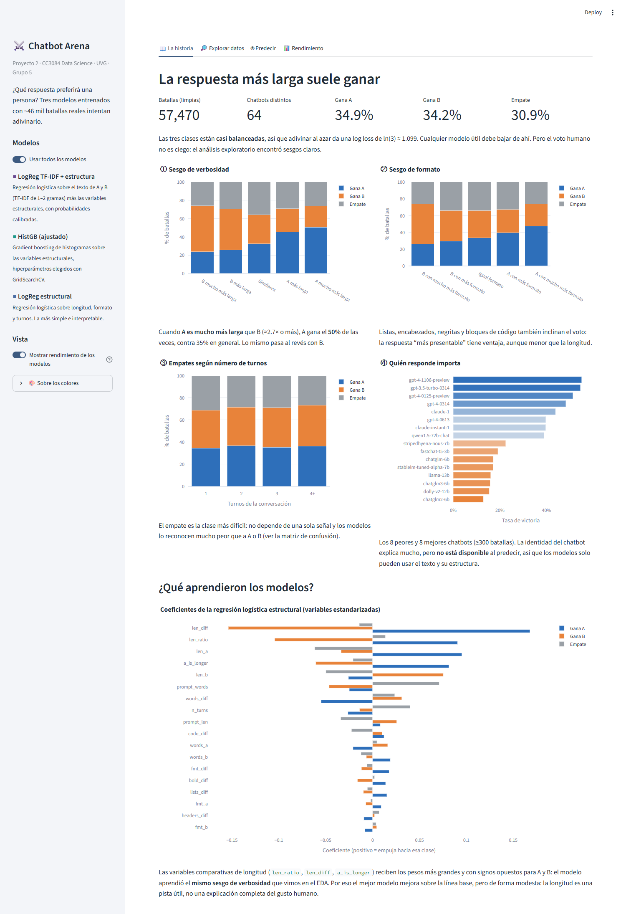
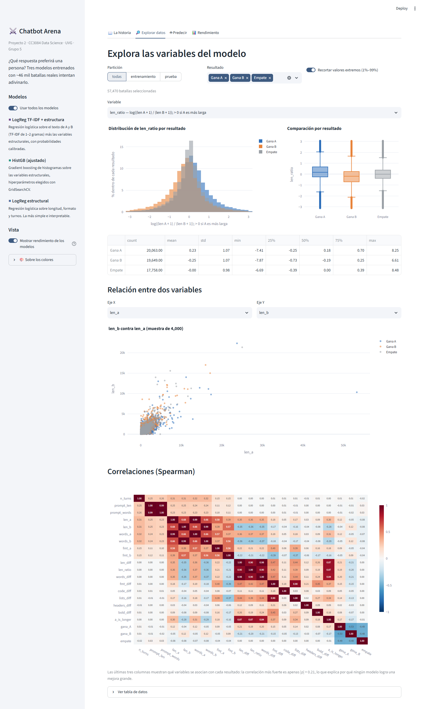
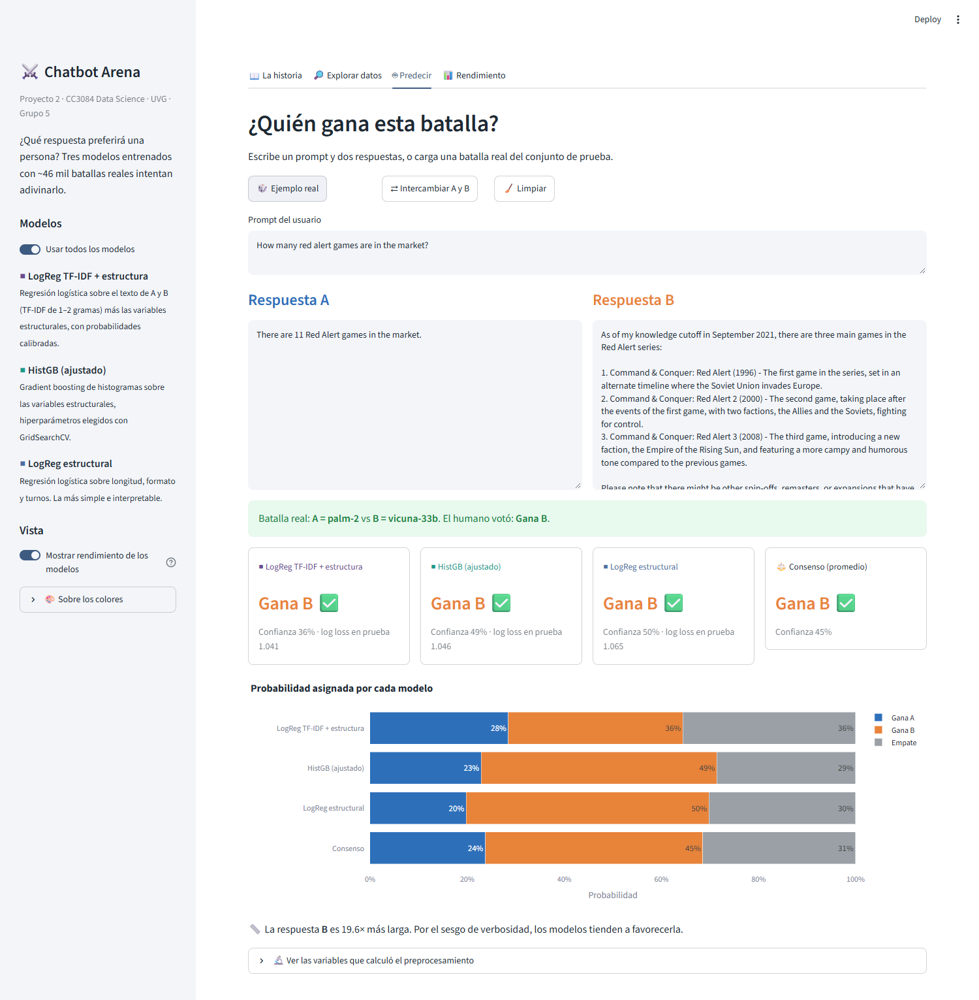
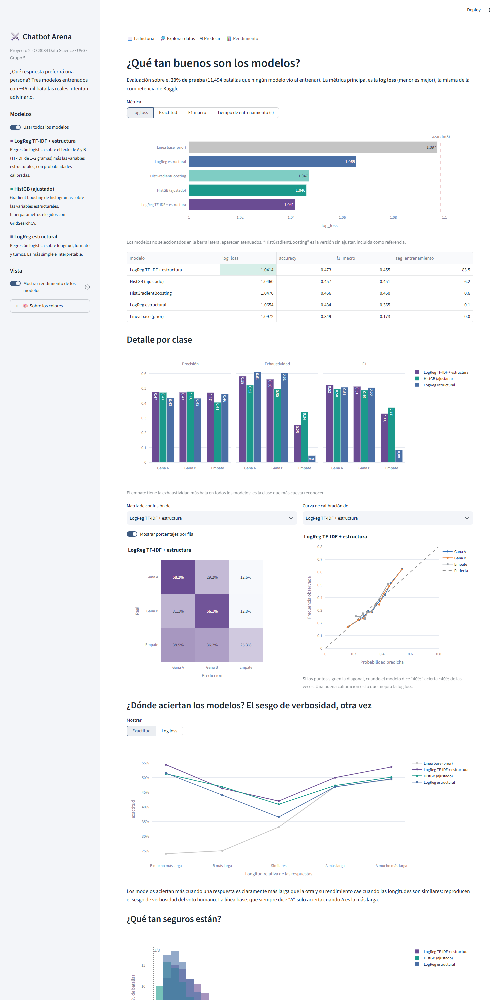
Bradley, R. A., & Terry, M. E. (1952). Rank analysis of incomplete block designs: I. The method of paired comparisons. Biometrika, 39(3/4), 324–345. https://doi.org/10.2307/2334029
Chen, T., & Guestrin, C. (2016). XGBoost: A scalable tree boosting system. En Proceedings of the 22nd ACM SIGKDD International Conference on Knowledge Discovery and Data Mining (pp. 785–794). ACM. https://doi.org/10.1145/2939672.2939785
Chiang, W.-L., Zheng, L., Sheng, Y., Angelopoulos, A. N., Li, T., Li, D., Zhang, H., Zhu, B., Jordan, M., Gonzalez, J. E., & Stoica, I. (2024). Chatbot Arena: An open platform for evaluating LLMs by human preference. En Proceedings of the 41st International Conference on Machine Learning (Vol. 235). PMLR.
Christiano, P. F., Leike, J., Brown, T., Martic, M., Legg, S., & Amodei, D. (2017). Deep reinforcement learning from human preferences. En Advances in Neural Information Processing Systems (Vol. 30). Curran Associates.
Devlin, J., Chang, M.-W., Lee, K., & Toutanova, K. (2019). BERT: Pre-training of deep bidirectional transformers for language understanding. En Proceedings of the 2019 Conference of the North American Chapter of the Association for Computational Linguistics (pp. 4171–4186). ACL. https://doi.org/10.18653/v1/N19-1423
Friedman, J. H. (2001). Greedy function approximation: A gradient boosting machine. The Annals of Statistics, 29(5), 1189–1232. https://doi.org/10.1214/aos/1013203451
Gneiting, T., & Raftery, A. E. (2007). Strictly proper scoring rules, prediction, and estimation. Journal of the American Statistical Association, 102(477), 359–378. https://doi.org/10.1198/016214506000001437
Hastie, T., Tibshirani, R., & Friedman, J. (2009). The elements of statistical learning: Data mining, inference, and prediction (2.ª ed.). Springer. https://doi.org/10.1007/978-0-387-84858-7
He, P., Liu, X., Gao, J., & Chen, W. (2021). DeBERTa: Decoding-enhanced BERT with disentangled attention. En International Conference on Learning Representations.
Hu, E. J., Shen, Y., Wallis, P., Allen-Zhu, Z., Li, Y., Wang, S., Wang, L., & Chen, W. (2022). LoRA: Low-rank adaptation of large language models. En International Conference on Learning Representations.
Jurafsky, D., & Martin, J. H. (2024). Speech and language processing (3.ª ed., borrador). Stanford University. https://web.stanford.edu/~jurafsky/slp3/
Kaggle. (2024). LMSYS – Chatbot Arena human preference predictions [Conjunto de datos y competencia]. https://www.kaggle.com/competitions/lmsys-chatbot-arena
Ke, G., Meng, Q., Finley, T., Wang, T., Chen, W., Ma, W., Ye, Q., & Liu, T.-Y. (2017). LightGBM: A highly efficient gradient boosting decision tree. En Advances in Neural Information Processing Systems (Vol. 30). Curran Associates.
Manning, C. D., Raghavan, P., & Schütze, H. (2008). Introduction to information retrieval. Cambridge University Press. https://doi.org/10.1017/CBO9780511809071
Niculescu-Mizil, A., & Caruana, R. (2005). Predicting good probabilities with supervised learning. En Proceedings of the 22nd International Conference on Machine Learning (pp. 625–632). ACM. https://doi.org/10.1145/1102351.1102430
Ouyang, L., Wu, J., Jiang, X., Almeida, D., Wainwright, C., Mishkin, P., Zhang, C., Agarwal, S., Slama, K., Ray, A., Schulman, J., Hilton, J., Kelton, F., Miller, L., Simens, M., Askell, A., Welinder, P., Christiano, P. F., Leike, J., & Lowe, R. (2022). Training language models to follow instructions with human feedback. En Advances in Neural Information Processing Systems (Vol. 35, pp. 27730–27744). Curran Associates.
Pedregosa, F., Varoquaux, G., Gramfort, A., Michel, V., Thirion, B., Grisel, O., Blondel, M., Prettenhofer, P., Weiss, R., Dubourg, V., Vanderplas, J., Passos, A., Cournapeau, D., Brucher, M., Perrot, M., & Duchesnay, É. (2011). Scikit-learn: Machine learning in Python. Journal of Machine Learning Research, 12, 2825–2830.
Platt, J. C. (1999). Probabilistic outputs for support vector machines and comparisons to regularized likelihood methods. En A. J. Smola, P. Bartlett, B. Schölkopf, & D. Schuurmans (Eds.), Advances in large margin classifiers (pp. 61–74). MIT Press.
Salton, G., & Buckley, C. (1988). Term-weighting approaches in automatic text retrieval. Information Processing & Management, 24(5), 513–523. https://doi.org/10.1016/0306-4573(88)90021-0
Vaswani, A., Shazeer, N., Parmar, N., Uszkoreit, J., Jones, L., Gomez, A. N., Kaiser, Ł., & Polosukhin, I. (2017). Attention is all you need. En Advances in Neural Information Processing Systems (Vol. 30). Curran Associates.
Wang, P., Li, L., Chen, L., Cai, Z., Zhu, D., Lin, B., Cao, Y., Kong, L., Liu, Q., Liu, T., & Sui, Z. (2024). Large language models are not fair evaluators. En Proceedings of the 62nd Annual Meeting of the Association for Computational Linguistics (Volume 1: Long Papers). ACL.
Zheng, L., Chiang, W.-L., Sheng, Y., Zhuang, S., Wu, Z., Zhuang, Y., Lin, Z., Li, Z., Li, D., Xing, E. P., Zhang, H., Gonzalez, J. E., & Stoica, I. (2023). Judging LLM-as-a-judge with MT-Bench and Chatbot Arena. En Advances in Neural Information Processing Systems (Vol. 36). Curran Associates.